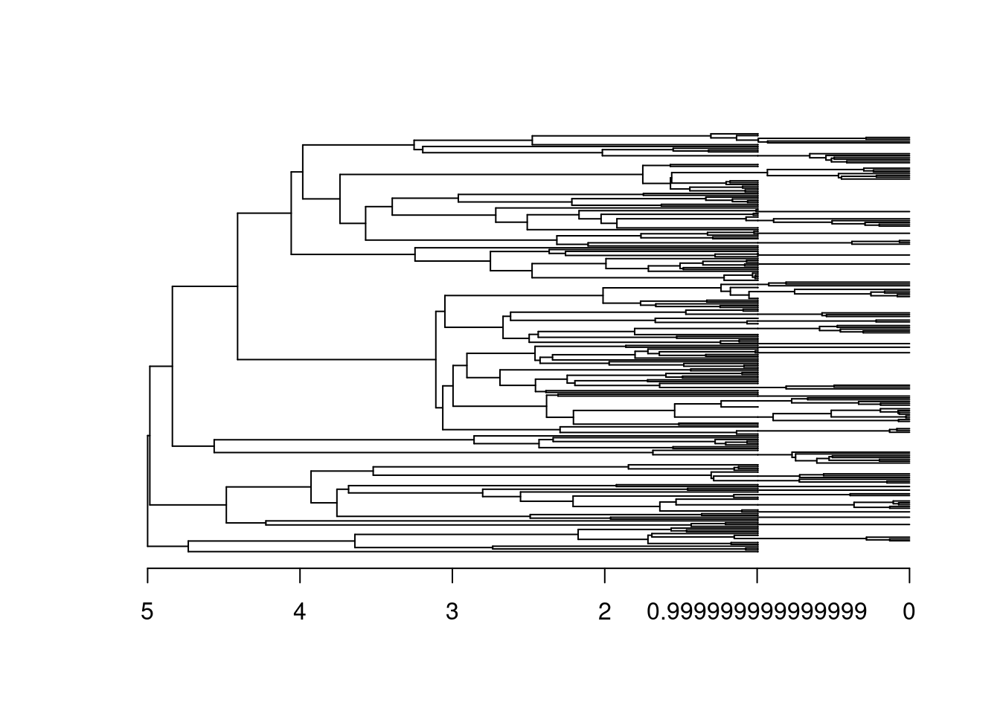
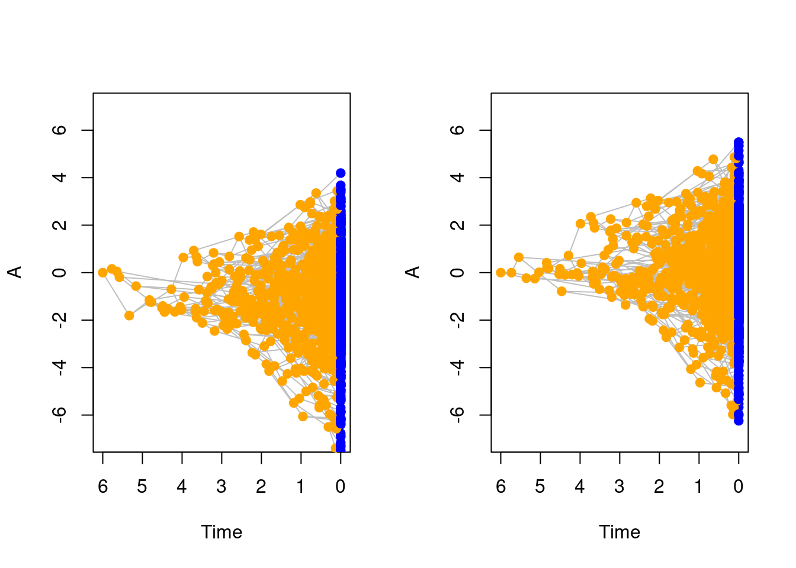
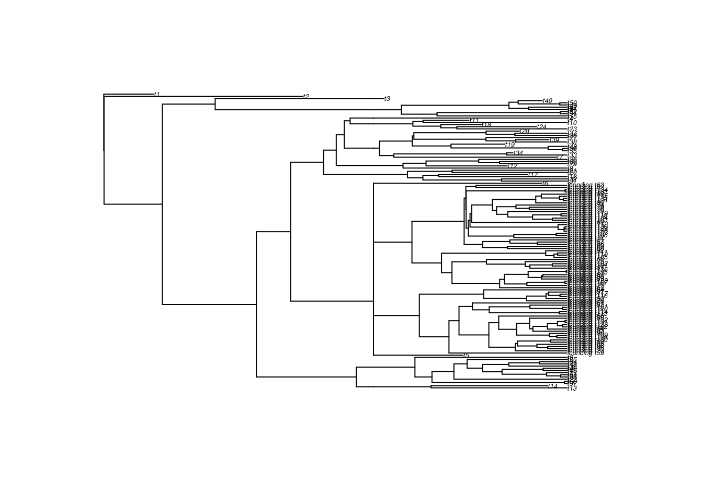

5 Adding events to simulations
One other major feature of the treats package is that it allows simulations to run with specified events that occur during the simulation.
These are typically events that can drastically change the course of the simulation.
For example, you might want simulate a mass extinction at some specific point in time.
However, these can also be more subtle, like the internal change of parameter values when reaching a specific trait value.
These are all handled by treats with the events object that you can create using make.events and has the same overall logic as make.traits and make.modifiers.
events require three main arguments:
* the target which designates what the extinction should affect (e.g. the taxa, the speciation rate, etc…);
* the condition which designates when to trigger the event;
* the modification which designates what to modify when the event is triggered.
There are several more arguments that can be passed to make.events but they are discussed later on.
First let’s focus on these three main arguments:
make.events: events are encoded using three main arguments: the target, specifying what the event is modifying, the condition specifying when to trigger the event, and modification, specifying how the event modifies the simulations.
5.0.1 Quick overview
condition, modification, add, test = TRUE, event.name, replications = 0, additional.args )
| function | arguments | input | what does it do |
|---|---|---|---|
make.events |
target* | any of the following: “taxa”, “bd.params”, “traits”, “modifiers” or “founding” | what aspect of the simulation should the event target |
make.events |
condition* | a function | a function that affects the condition of when to trigger the event (see below) |
make.events |
modification* | a function | a function that applies the modification to the target if the condition is triggered (see below) |
make.events |
add | a treats object |
another event generated by make.events |
make.events |
test | logical | whether to test the validity of the event |
make.events |
event.name | a character string | the name of the event |
make.events |
replications | a number | if possible how many times is the event allowing to be repeated |
make.events |
additional.args | … | any additional arguments to be passed to the event |
Here is a list of implemented conditions (see ?events.conditions):
| function | arguments | input | what does it do |
|---|---|---|---|
age.condition, taxa.condition, trait.condition |
x | the value to check the target against | e.g. time = x, taxa = x or trait = x (see below) |
| … | condition | a relational operator | e.g. ==, >, !=, etc. for asking for example time == x |
| … | … | any additional arguments to be passed to the event |
Here is a list of implemented modifications (see ?events.modifications):
| function | arguments | input | what does it do |
|---|---|---|---|
random.extinction |
x | a numeric value | the proportion of species to make extinct |
trait.extinction |
x | a numeric value | the trait value when to trigger the extinction |
trait.extinction |
condition | a relational operator | the relation to the trait value (e.g. x = 1 and condition = > makes species that have a trait value > 1 go extinct) |
bd.params.update |
… | any argument to be passed to make.bd.params |
|
traits.update |
… | any argument to be passed to make.traits |
|
modifiers.update |
… | any argument to be passed to make.modifiers |
* non-optional arguments
5.1 Target
The target of the event is what the event is going to modify in the birth-death algorithm. You can only have one target per event (along with one condition and one modification) but you can create events that contain multiple events (i.e. multiple triplets of target/condition/modification). The targets that are currently available are:
"taxa"to modify anything linked to thelineagelist. e.g. making half of the living taxa go extinct."bd.params"to modify anything linked to thebd.paramsobject. For example you might want to change the distribution of one of the parameter after someconditions. This is typically done by updating the object using the argumentupdatefrommake.bd.params."traits"to modify anything linked to thetraitsobject. For example you might want to change the trait process after someconditions. This is typically done by updating the object using the argumentupdatefrommake.traits."modifiers"to modify anything linked to themodifiersobject. For example you might want to change the speciation rule after someconditions. This is typically done by updating the object using the argumentupdatefrommake.modifiers."founding"this target is a bit more specialised and allows you run a nestedtreatsobject in the simulation. It is covered in a specific section below.
We will see some examples of these targets in the conditions and modifications described below.
5.2 Conditions
condition is a function that returns a logical value. When a specific condition is met, it should return TRUE and trigger the event, else it should return FALSE.
Currently there are three conditions functions implemented in treats but you can easily come up with your own version of them.
All condition functions in treats take at least two arguments: x for the variable of interest (e.g. time, number of taxa, trait value, etc.) and condition, the relational operator to evaluate. A relational operator is the proper (fancy) term designating all the comparisons you’re regularly using in R like == (is equal?) < (is smaller?) >= (is bigger or equal?). You can get the full list in the R base manual (using ?Comparison or any of the relational operator in a function form). For more details on how functions really work in R see the Advanced R book!
age.conditionwill trigger theeventonce a certain time is reached in the simulations and is the simplest/most basic condition with no arguments other than the time required. For exampleage.condition(4, condition = `==`)will trigger theeventonce the simulations reaches 4 time units. Easy.taxa.conditionwill trigger theeventonce a certain number of taxa are reached. This can be considered including or excluding fossil species. For exampletaxa.condition(42, condition = `>=`, living = TRUE)will trigger theeventif there are at least 42 living taxa.trait.conditionwill trigger theeventonce a certain trait value is reached. This function allows to say which trait(s) to target (by default, the first one usingtrait = 1), what value of the trait to target (by defaultwhat = max) and whether to use and absolute trait value or not (absolute = TRUE). For exampletrait.condition(1/3, condition = `>`, trait = 1, what = sd)will trigger the condition after the standard deviation of the first trait reaches 1/3.
5.3 Modifications
After defining the event, target and condition, you also need to specify what it should modify.
These are functions that should modify a specific aspect of the target.
Depending on the target you can modify the following:
- if the target is
"taxa"you can modify the internallineagelist by removing living species usingrandom.extinctionortrait.extinction. - if the target is
"taxa"you can modify the lineage tracker by removing living species usingrandom.extinctionortrait.extinction. - if the target is
"bd.params"you can modify thebd.paramsobject usingbd.params.update. - if the target is
"traits"you can modify thetraitsobject usingtraits.update. - if the target is
"modifiers"you can modify themodifiersobject usingmodifiers.update. - (for the
"founding"target see below)
The most straightforward example is for modifications on bd.params, traits or modifiers objects because they use the same syntax as for their generic make.X function.
For example, for make.traits, you can update a trait using the update argument as follows:
## A BM trait in two dimensions
(BM_2D <- make.traits(n = 2, process = BM.process))## ---- treats traits object ----
## 2 traits for 1 process (A:2) with one starting value (0).## Updating the 2D BM into a 2D OU
(OU_2D <- make.traits(update = BM_2D, process = OU.process))## ---- treats traits object ----
## 2 traits for 1 process (A:2) with one starting value (0).So the function update.X applies the update to the object X when the event happens.
The following event updates the bd.params object by setting the extinction parameter to 1/3 when reaching a 10 species:
make.events(target = "bd.params",
condition = taxa.condition(10, condition = `>=`),
modification = bd.params.update(extinction = 1/3))Note that by default events are triggered only once across the whole simulation, so although the example above states that the condition is reaching at least 10 taxa, it will not trigger every time it reaches more than 10 taxa, only the first time. You can change the number of times the events can be triggered using the argument
replications(by default it’s set toreplications = 0for triggering the event only once).
5.4 Examples
Here are some examples illustrating how to generate events. For a simple example, we can create a extinction event that will remove 80% of species after reaching time 4:
## 80% mass extinction at time 4
mass_extinction <- make.events(
target = "taxa",
condition = age.condition(4),
modification = random.extinction(0.8))
## Simulation parameters
stop.rule <- list(max.time = 5)
bd.params <- list(extinction = 0, speciation = 1)
## Running the simulations
set.seed(123)
results <- treats(bd.params = bd.params,
stop.rule = stop.rule,
events = mass_extinction)
## Plotting the results
plot(results, show.tip.label = FALSE)
axisPhylo()
Or for a slightly more complex example, we can can change the trait process from a BM to an OU when the trait values reaches an upper 95% quantile value above 2:
## The 95% upper quantile value of a distribution
upper.95 <- function(x) {
return(quantile(x, prob = 0.95))
}
## Create an event to change the trait process
change_process <- make.events(
target = "traits",
## condition is triggered if(upper.95(x) > 3)
condition = trait.condition(3, condition = `>`, what = upper.95),
modification = traits.update(process = OU.process))
## Set the simulation parameters
bd.params <- list(extinction = 0, speciation = 1)
stop.rule <- list(max.time = 6)
traits <- make.traits()
## Run the simulations
set.seed(1)
no_change <- treats(bd.params = bd.params,
stop.rule = stop.rule,
traits = traits)
set.seed(1)
process_change <- treats(bd.params = bd.params,
stop.rule = stop.rule,
traits = traits,
events = change_process)
## Plot the results
par(mfrow = c(1,2))
plot(no_change, ylim = c(-7, 7))
plot(process_change, ylim = c(-7, 7))
par(mfrow = c(1,1))5.5 Founding events
Founding events are a specific target for events that allows you to simulate a birth-death process within the current one!
It allows you to simulate a specific treats process using the treats function with its own traits, modifiers, bd.params and events (and yes, that’s including events that have their own founding event).
This is basically the ultimate nested boss of modularity!
The founding event will run an internal treats process (i.e. simulating a tree and, optionally, some data) resulting in a founding sub-tree.
It will then branch this sub-tree onto the rest of the simulation that continued normally in the mean time.
You can specify the founding event using the inbuilt founding.event modification event.
This function takes the exact same arguments as treats to simulate the sub-tree with its own parameters.
Additionally, we will use the additional.args argument from make.events to specify a prefix for the founding tree tips (to make them easier to distinguish).
## Set up parameters
stop.rule <- list(max.time = 4)
bd.params <- make.bd.params(speciation = 1, extinction = 0.3)
## Events that generate a new process (founding tree - with no extinction)
founding_event <- make.events(
target = "founding",
condition = taxa.condition(10),
modification = founding.event(
bd.params = make.bd.params(speciation = 2,
extinction = 0)),
additional.args = list(prefix = "founding_"))
## Simulations
set.seed(11)
founding_tree <- treats(bd.params = bd.params,
stop.rule = stop.rule,
events = founding_event)
plot(founding_tree, cex = 0.4)
Note that the nestedness here is potentially endless, for example, you can pass an event argument to the founding.event that will generate another founding event, etc.